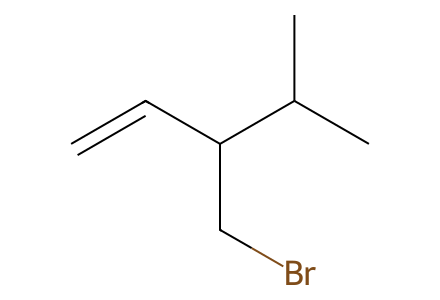
C=CC(CBr)C(C)CSI-only preparation network: racemic and enantioenriched revised papililone A, fragment alternatives, isolated controls and explicitly drawn crude intermediates. Main article unavailable. Facts compiled deterministically; independent review pending.
完整 JSON · 逐步 CSV · 路线序列 · SDF · HRMS 核对
| 事件 | 分子连接 | 报告产率 | Canonical reaction SMILES |
|---|---|---|---|
| A01 | 8 + methyl methacrylate → 10 | not reported | C=C(C)C(=O)OC.C=CC(CBr)C(C)C>>C=CC(CCC(C)C(=O)OC)C(C)C |
| A02 | 10 → 11 | 11: 53% | C=CC(CCC(C)C(=O)OC)C(C)C>>C=CC(CCC(C)C(=O)O)C(C)C |
| A03 | 11 → 13 | not reported | C=CC(CCC(C)C(=O)O)C(C)C>>C=CC(CCC(C)C(N)=O)C(C)C |
| A04 | 13 → 14 | 14: 89% | C=CC(CCC(C)C(N)=O)C(C)C>>C=CC(CCC(C)C#N)C(C)C |
| A05 | 14 → 7 | 7: 60% | C=CC(CCC(C)C#N)C(C)C>>CC(C)[C@H]1CC[C@]2(C)C(=O)C[C@H]12 |
| A06 | 11 → 12 | 12: 80% | C=CC(CCC(C)C(=O)O)C(C)C>>C=CC(CCC(C)C(=O)N1CCCC1)C(C)C |
| A07 | 12 → 7 + 7' | not reported | C=CC(CCC(C)C(=O)N1CCCC1)C(C)C>>CC(C)[C@H]1CC[C@@]2(C)C(=O)C[C@@H]12.CC(C)[C@H]1CC[C@]2(C)C(=O)C[C@H]12 |
| A08 | 7 → 7a | 7a: 78% | CC(C)[C@H]1CC[C@]2(C)C(=O)C[C@H]12>>Cc1ccc(S(=O)(=O)NN=C2C[C@@H]3[C@@H](C(C)C)CC[C@]23C)cc1 |
| A09 | 8 → 15 | 15: 96% | C=CC(CBr)C(C)C>>C=CC(CI)C(C)C |
| A10 | 15 + methacrylonitrile → 14 | 14: 25% | C=C(C)C#N.C=CC(CI)C(C)C>>C=CC(CCC(C)C#N)C(C)C |
| B01 | 16 + 17 → 18 + 18' | not reported | C#CC(O)CC.C/C=C/CBr>>C/C=C/CC#CC(O)CC.C=CC(C)C#CC(O)CC |
| B02 | 18 + 18' → 6 + 6' | not reported | C/C=C/CC#CC(O)CC.C=CC(C)C#CC(O)CC>>C/C=C/C/C(I)=C/C(O)CC.C=CC(C)/C(I)=C/C(O)CC |
| B03 | 18 + 18' → 19 + 19' | not reported | C/C=C/CC#CC(O)CC.C=CC(C)C#CC(O)CC>>C/C=C/CC#CC(CC)O[Si](C)(C)C(C)(C)C.C=CC(C)C#CC(CC)O[Si](C)(C)C(C)(C)C |
| B04 | 19 + 19' → 20 | 20: 40% | C/C=C/CC#CC(CC)O[Si](C)(C)C(C)(C)C.C=CC(C)C#CC(CC)O[Si](C)(C)C(C)(C)C>>C/C=C/C/C(I)=C\C(CC)O[Si](C)(C)C(C)(C)C |
| B05 | 20 + 7 → S1 | not reported | C/C=C/C/C(I)=C\C(CC)O[Si](C)(C)C(C)(C)C.CC(C)[C@H]1CC[C@]2(C)C(=O)C[C@H]12>>C/C=C/CC/C(=C\C(CC)O[Si](C)(C)C(C)(C)C)C1(O)C[C@@H]2[C@@H](C(C)C)CC[C@@]21C |
| B06 | S1 → 22 | 22: 2% | C/C=C/CC/C(=C\C(CC)O[Si](C)(C)C(C)(C)C)C1(O)C[C@@H]2[C@@H](C(C)C)CC[C@@]21C>>C/C=C/CC/C(=C\C(O)CC)C1(O)C[C@@H]2[C@@H](C(C)C)CC[C@@]21C |
| B07 | 22 → 23 | not reported | C/C=C/CC/C(=C\C(O)CC)C1(O)C[C@@H]2[C@@H](C(C)C)CC[C@@]21C>>C/C=C/CC/C(=C\C(=O)CC)C1(O)C[C@@H]2[C@@H](C(C)C)CC[C@@]21C |
| B08 | 23 → 24 | 24: 18% | C/C=C/CC/C(=C\C(=O)CC)C1(O)C[C@@H]2[C@@H](C(C)C)CC[C@@]21C>>C/C=C/C[C@]1(CC(=O)CC)C(=O)C[C@@H]2[C@@H](C(C)C)CC[C@@]21C |
| C01 | 33 → 34 | 34: 76% | O=C(O)c1cc(Br)c(Br)o1>>O=Cc1cc(Br)c(Br)o1 |
| C02 | 34 → 35 | 35: 96% | O=Cc1cc(Br)c(Br)o1>>CC(O)c1cc(Br)c(Br)o1 |
| C03 | 35 → 36 | not reported | CC(O)c1cc(Br)c(Br)o1>>CCc1cc(Br)c(Br)o1 |
| C04 | 36 → 37 | 37: 57% | CCc1cc(Br)c(Br)o1>>CCc1cc(Br)c(C=O)o1 |
| C05 | 37 + ethylidenetriphenylphosphorane → 32 | 32: 95% | CC=P(c1ccccc1)(c1ccccc1)c1ccccc1.CCc1cc(Br)c(C=O)o1>>C/C=C/c1oc(CC)cc1Br |
| C06 | 44 + 45 → 46 | 46: 79% | C#CC(O)/C=C/C.CCC(=O)N(C)OC>>C/C=C/C(O)C#CC(=O)CC |
| C07 | 46 → 32 | 32: 54% | C/C=C/C(O)C#CC(=O)CC>>C/C=C/c1oc(CC)cc1Br |
| D01 | 7 + 32 → 31 + 31' | 31: 41%; 31': 38% | C/C=C/c1oc(CC)cc1Br.CC(C)[C@H]1CC[C@]2(C)C(=O)C[C@H]12>>C/C=C/c1oc(CC)cc1[C@@]1(O)C[C@@H]2[C@@H](C(C)C)CC[C@@]21C.C/C=C/c1oc(CC)cc1[C@]1(O)C[C@@H]2[C@@H](C(C)C)CC[C@@]21C |
| D02 | 7 + 32 → 31 | 31: 77% | C/C=C/c1oc(CC)cc1Br.CC(C)[C@H]1CC[C@]2(C)C(=O)C[C@H]12>>C/C=C/c1oc(CC)cc1[C@]1(O)C[C@@H]2[C@@H](C(C)C)CC[C@@]21C |
| D03 | 31 → 30 | 30: 86% | C/C=C/c1oc(CC)cc1[C@]1(O)C[C@@H]2[C@@H](C(C)C)CC[C@@]21C>>C/C=C/C(=O)/C(=C/C(=O)CC)[C@]1(O)C[C@@H]2[C@@H](C(C)C)CC[C@@]21C |
| D04 | 31' → 30' | 30': 56% | C/C=C/c1oc(CC)cc1[C@@]1(O)C[C@@H]2[C@@H](C(C)C)CC[C@@]21C>>C/C=C/C(=O)/C(=C/C(=O)CC)[C@@]1(O)C[C@@H]2[C@@H](C(C)C)CC[C@@]21C |
| D05 | 30 → 29 + 38 | 29: 60%; 38: 2.8% | C/C=C/C(=O)/C(=C/C(=O)CC)[C@]1(O)C[C@@H]2[C@@H](C(C)C)CC[C@@]21C>>C/C=C/C(=O)OC1=C(CC(=O)CC)[C@@]2(C)CC[C@H](C(C)C)[C@H]2C1.C/C=C/C(=O)[C@@]1(CC(=O)CC)C(=O)C[C@@H]2[C@@H](C(C)C)CC[C@@]21C |
| D06 | 30' → 29' | 29': 66% | C/C=C/C(=O)/C(=C/C(=O)CC)[C@@]1(O)C[C@@H]2[C@@H](C(C)C)CC[C@@]21C>>C/C=C/C(=O)[C@]1(CC(=O)CC)C(=O)C[C@@H]2[C@@H](C(C)C)CC[C@@]21C |
| D07 | 29 → 38 + 39 | 38: 42%; 39: 13% | C/C=C/C(=O)[C@@]1(CC(=O)CC)C(=O)C[C@@H]2[C@@H](C(C)C)CC[C@@]21C>>C/C=C/C(=O)OC1=C(CC(=O)CC)[C@@]2(C)CC[C@H](C(C)C)[C@H]2C1.CCC1=C(C2C(=O)C[C@@H]3[C@@H](C(C)C)CC[C@]23C)C(=O)CC(C)O1 |
| D08 | 29 → 40 | 40: 39% | C/C=C/C(=O)[C@@]1(CC(=O)CC)C(=O)C[C@@H]2[C@@H](C(C)C)CC[C@@]21C>>C=CC1=C(CC)C[C@]2(C(=O)C[C@@H]3[C@@H](C(C)C)CC[C@@]32C)C1=O |
| D09 | 29 → 42 | 42: 45% | C/C=C/C(=O)[C@@]1(CC(=O)CC)C(=O)C[C@@H]2[C@@H](C(C)C)CC[C@@]21C>>C/C=C/C(=O)[C@@]1(CC(=O)CC)C(O[Si](C)(C)C(C)(C)C)=C[C@@H]2[C@@H](C(C)C)CC[C@@]21C |
| D10 | 29 → 43 | 43: 64% | C/C=C/C(=O)[C@@]1(CC(=O)CC)C(=O)C[C@@H]2[C@@H](C(C)C)CC[C@@]21C>>C/C=C/C(=O)[C@@]1(CC(=O)CC)C(OS(=O)(=O)C(F)(F)F)=C[C@@H]2[C@@H](C(C)C)CC[C@@]21C |
| D11 | 43 → 3 | 3: 55% | C/C=C/C(=O)[C@@]1(CC(=O)CC)C(OS(=O)(=O)C(F)(F)F)=C[C@@H]2[C@@H](C(C)C)CC[C@@]21C>>C/C=C/C(=O)[C@@]12CC(=O)C(C)=C1C[C@@H]1[C@@H](C(C)C)CC[C@@]12C |
| D12 | 43 → 1 | 1: 45% | C/C=C/C(=O)[C@@]1(CC(=O)CC)C(OS(=O)(=O)C(F)(F)F)=C[C@@H]2[C@@H](C(C)C)CC[C@@]21C>>CC1=C2[C@@H]3[C@@H]4[C@@H](C(C)C)CC[C@]4(C)[C@@]2(CC1=O)C(=O)C[C@H]3C |
| E01 | (-)-8 + methyl methacrylate → (-)-11 | not reported | C=C(C)C(=O)OC.C=C[C@H](CBr)C(C)C>>C=C[C@H](CCC(C)C(=O)O)C(C)C |
| E02 | (-)-11 → (+)-14 | not reported | C=C[C@H](CCC(C)C(=O)O)C(C)C>>C=C[C@H](CCC(C)C#N)C(C)C |
| E03 | (+)-14 → (+)-7 | not reported | C=C[C@H](CCC(C)C#N)C(C)C>>CC(C)[C@H]1CC[C@]2(C)C(=O)C[C@H]12 |
| E04 | (+)-7 → (+)-7a | not reported | CC(C)[C@H]1CC[C@]2(C)C(=O)C[C@H]12>>Cc1ccc(S(=O)(=O)NN=C2C[C@@H]3[C@@H](C(C)C)CC[C@]23C)cc1 |
| E05 | (+)-7 + 32 → (+)-31 | not reported | C/C=C/c1oc(CC)cc1Br.CC(C)[C@H]1CC[C@]2(C)C(=O)C[C@H]12>>C/C=C/c1oc(CC)cc1[C@]1(O)C[C@@H]2[C@@H](C(C)C)CC[C@@]21C |
| E06 | (+)-31 → (+)-30 | not reported | C/C=C/c1oc(CC)cc1[C@]1(O)C[C@@H]2[C@@H](C(C)C)CC[C@@]21C>>C/C=C/C(=O)/C(=C/C(=O)CC)[C@]1(O)C[C@@H]2[C@@H](C(C)C)CC[C@@]21C |
| E07 | (+)-30 → (-)-29 | not reported | C/C=C/C(=O)/C(=C/C(=O)CC)[C@]1(O)C[C@@H]2[C@@H](C(C)C)CC[C@@]21C>>C/C=C/C(=O)[C@@]1(CC(=O)CC)C(=O)C[C@@H]2[C@@H](C(C)C)CC[C@@]21C |
| E08 | (-)-29 → (+)-43 | not reported | C/C=C/C(=O)[C@@]1(CC(=O)CC)C(=O)C[C@@H]2[C@@H](C(C)C)CC[C@@]21C>>C/C=C/C(=O)[C@@]1(CC(=O)CC)C(OS(=O)(=O)C(F)(F)F)=C[C@@H]2[C@@H](C(C)C)CC[C@@]21C |
| E09 | (+)-43 → (-)-3 | not reported | C/C=C/C(=O)[C@@]1(CC(=O)CC)C(OS(=O)(=O)C(F)(F)F)=C[C@@H]2[C@@H](C(C)C)CC[C@@]21C>>C/C=C/C(=O)[C@@]12CC(=O)C(C)=C1C[C@@H]1[C@@H](C(C)C)CC[C@@]12C |
| E10 | (+)-43 → (-)-1 | not reported | C/C=C/C(=O)[C@@]1(CC(=O)CC)C(OS(=O)(=O)C(F)(F)F)=C[C@@H]2[C@@H](C(C)C)CC[C@@]21C>>CC1=C2[C@@H]3[C@@H]4[C@@H](C(C)C)CC[C@]4(C)[C@@]2(CC1=O)C(=O)C[C@H]3C |

C=CC(CBr)C(C)C
C=C(C)C(=O)OC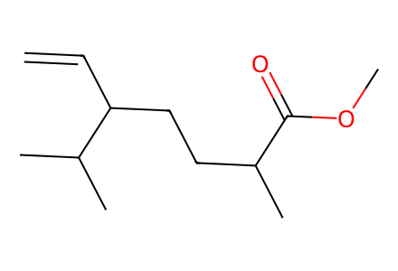
C=CC(CCC(C)C(=O)OC)C(C)C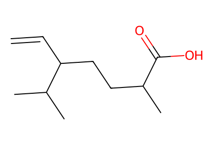
C=CC(CCC(C)C(=O)O)C(C)C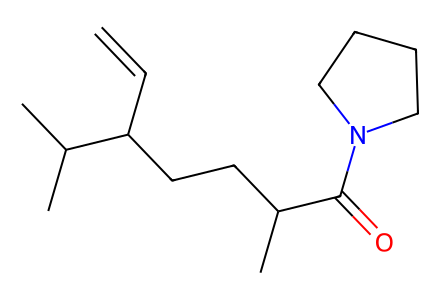
C=CC(CCC(C)C(=O)N1CCCC1)C(C)C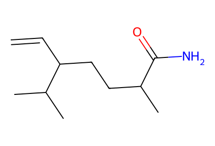
C=CC(CCC(C)C(N)=O)C(C)C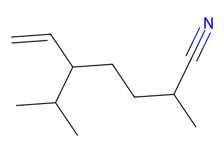
C=CC(CCC(C)C#N)C(C)C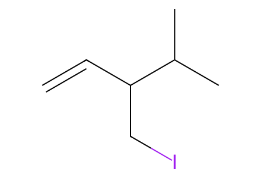
C=CC(CI)C(C)C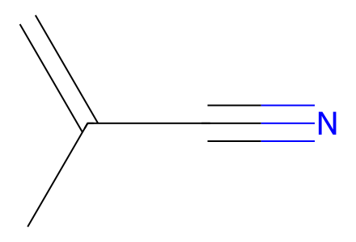
C=C(C)C#N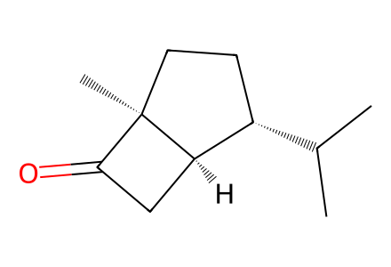
CC(C)[C@H]1CC[C@]2(C)C(=O)C[C@H]12
CC(C)[C@H]1CC[C@@]2(C)C(=O)C[C@@H]12
Cc1ccc(S(=O)(=O)NN=C2C[C@@H]3[C@@H](C(C)C)CC[C@]23C)cc1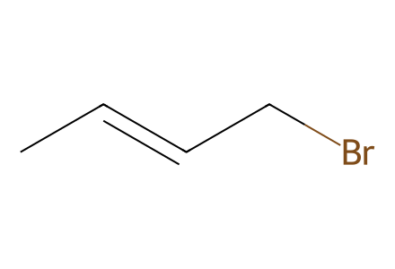
C/C=C/CBr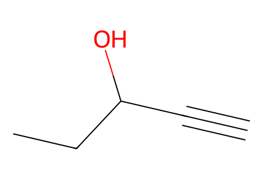
C#CC(O)CC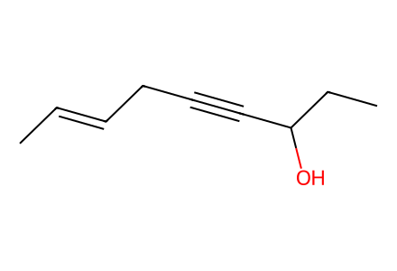
C/C=C/CC#CC(O)CC
C=CC(C)C#CC(O)CC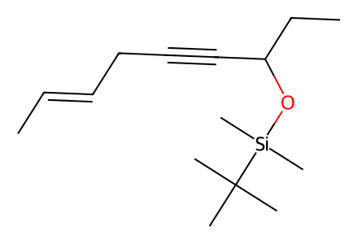
C/C=C/CC#CC(CC)O[Si](C)(C)C(C)(C)C
C=CC(C)C#CC(CC)O[Si](C)(C)C(C)(C)C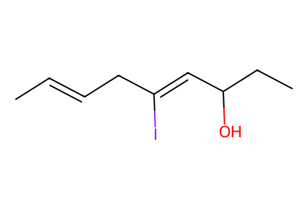
C/C=C/C/C(I)=C/C(O)CC
C=CC(C)/C(I)=C/C(O)CC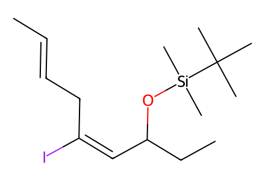
C/C=C/C/C(I)=C\C(CC)O[Si](C)(C)C(C)(C)C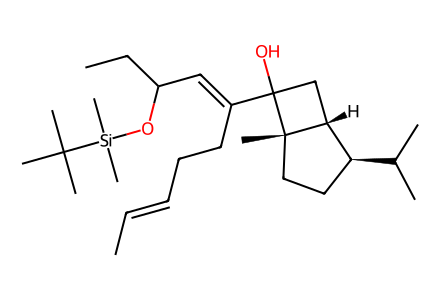
C/C=C/CC/C(=C\C(CC)O[Si](C)(C)C(C)(C)C)C1(O)C[C@@H]2[C@@H](C(C)C)CC[C@@]21C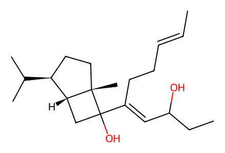
C/C=C/CC/C(=C\C(O)CC)C1(O)C[C@@H]2[C@@H](C(C)C)CC[C@@]21C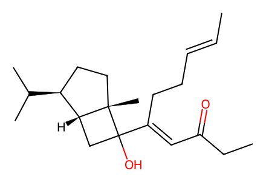
C/C=C/CC/C(=C\C(=O)CC)C1(O)C[C@@H]2[C@@H](C(C)C)CC[C@@]21C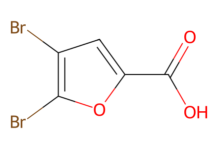
O=C(O)c1cc(Br)c(Br)o1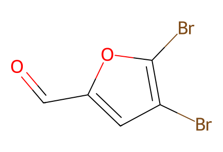
O=Cc1cc(Br)c(Br)o1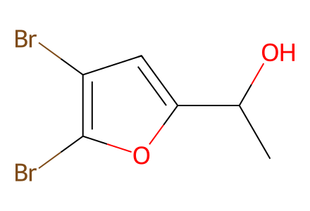
CC(O)c1cc(Br)c(Br)o1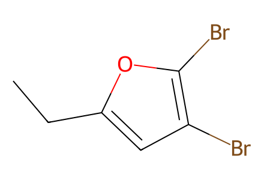
CCc1cc(Br)c(Br)o1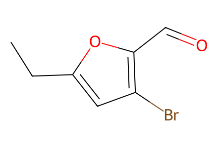
CCc1cc(Br)c(C=O)o1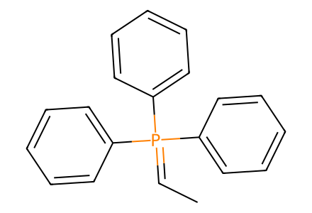
CC=P(c1ccccc1)(c1ccccc1)c1ccccc1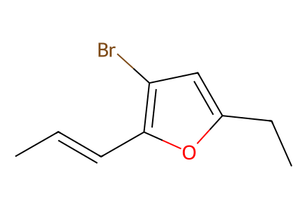
C/C=C/c1oc(CC)cc1Br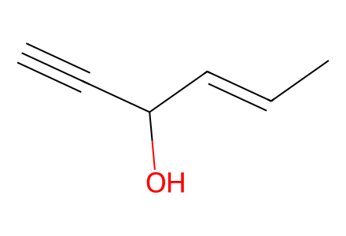
C#CC(O)/C=C/C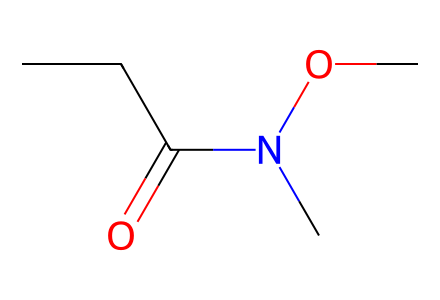
CCC(=O)N(C)OC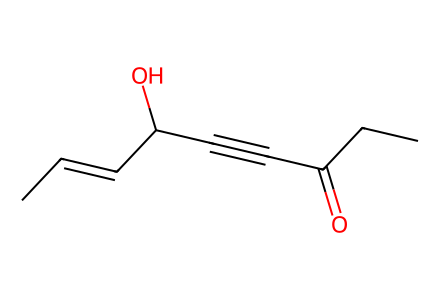
C/C=C/C(O)C#CC(=O)CC
C/C=C/c1oc(CC)cc1[C@]1(O)C[C@@H]2[C@@H](C(C)C)CC[C@@]21C
C/C=C/c1oc(CC)cc1[C@@]1(O)C[C@@H]2[C@@H](C(C)C)CC[C@@]21C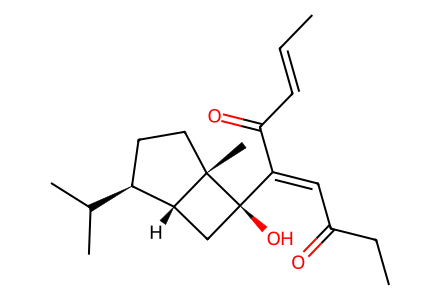
C/C=C/C(=O)/C(=C/C(=O)CC)[C@]1(O)C[C@@H]2[C@@H](C(C)C)CC[C@@]21C
C/C=C/C(=O)/C(=C/C(=O)CC)[C@@]1(O)C[C@@H]2[C@@H](C(C)C)CC[C@@]21C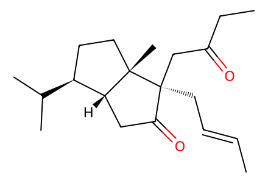
C/C=C/C[C@]1(CC(=O)CC)C(=O)C[C@@H]2[C@@H](C(C)C)CC[C@@]21C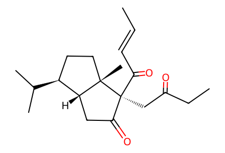
C/C=C/C(=O)[C@@]1(CC(=O)CC)C(=O)C[C@@H]2[C@@H](C(C)C)CC[C@@]21C
C/C=C/C(=O)[C@]1(CC(=O)CC)C(=O)C[C@@H]2[C@@H](C(C)C)CC[C@@]21C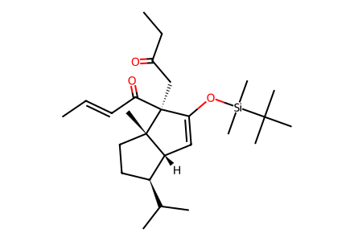
C/C=C/C(=O)[C@@]1(CC(=O)CC)C(O[Si](C)(C)C(C)(C)C)=C[C@@H]2[C@@H](C(C)C)CC[C@@]21C
C/C=C/C(=O)[C@@]1(CC(=O)CC)C(OS(=O)(=O)C(F)(F)F)=C[C@@H]2[C@@H](C(C)C)CC[C@@]21C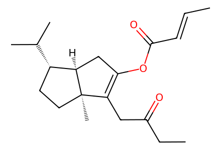
C/C=C/C(=O)OC1=C(CC(=O)CC)[C@@]2(C)CC[C@H](C(C)C)[C@H]2C1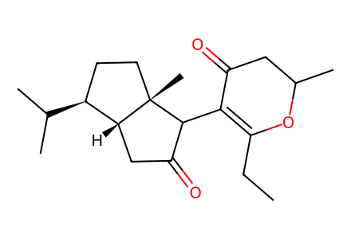
CCC1=C(C2C(=O)C[C@@H]3[C@@H](C(C)C)CC[C@]23C)C(=O)CC(C)O1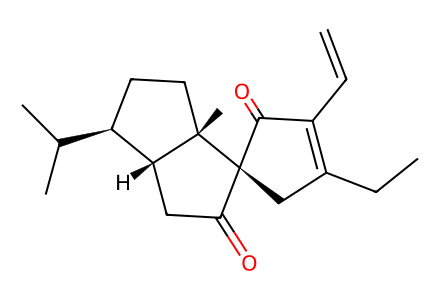
C=CC1=C(CC)C[C@]2(C(=O)C[C@@H]3[C@@H](C(C)C)CC[C@@]32C)C1=O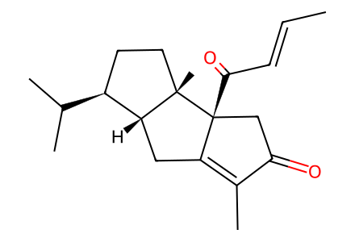
C/C=C/C(=O)[C@@]12CC(=O)C(C)=C1C[C@@H]1[C@@H](C(C)C)CC[C@@]12C
CC1=C2[C@@H]3[C@@H]4[C@@H](C(C)C)CC[C@]4(C)[C@@]2(CC1=O)C(=O)C[C@H]3C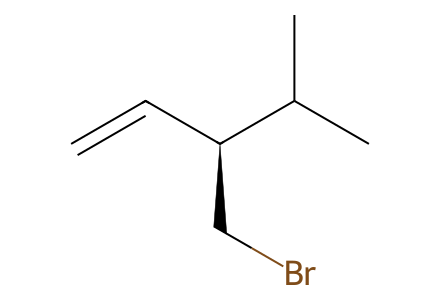
C=C[C@H](CBr)C(C)C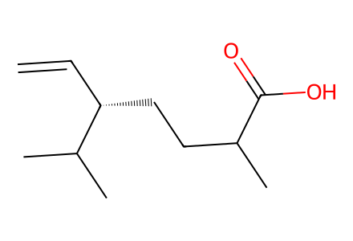
C=C[C@H](CCC(C)C(=O)O)C(C)C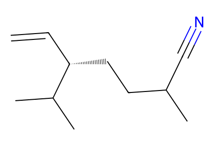
C=C[C@H](CCC(C)C#N)C(C)C-7.svg)
CC(C)[C@H]1CC[C@]2(C)C(=O)C[C@H]12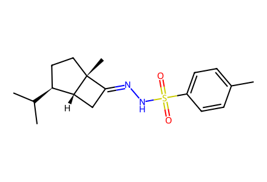
Cc1ccc(S(=O)(=O)NN=C2C[C@@H]3[C@@H](C(C)C)CC[C@]23C)cc1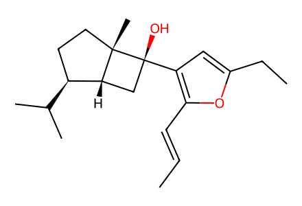
C/C=C/c1oc(CC)cc1[C@]1(O)C[C@@H]2[C@@H](C(C)C)CC[C@@]21C-30.svg)
C/C=C/C(=O)/C(=C/C(=O)CC)[C@]1(O)C[C@@H]2[C@@H](C(C)C)CC[C@@]21C-29.svg)
C/C=C/C(=O)[C@@]1(CC(=O)CC)C(=O)C[C@@H]2[C@@H](C(C)C)CC[C@@]21C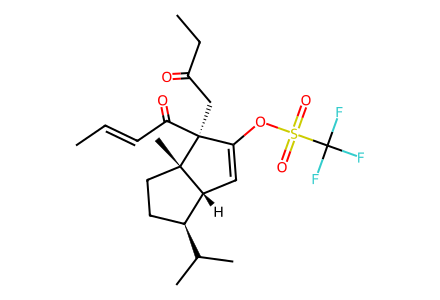
C/C=C/C(=O)[C@@]1(CC(=O)CC)C(OS(=O)(=O)C(F)(F)F)=C[C@@H]2[C@@H](C(C)C)CC[C@@]21C-3.svg)
C/C=C/C(=O)[C@@]12CC(=O)C(C)=C1C[C@@H]1[C@@H](C(C)C)CC[C@@]12C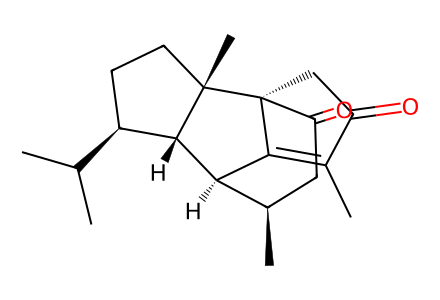
CC1=C2[C@@H]3[C@@H]4[C@@H](C(C)C)CC[C@]4(C)[C@@]2(CC1=O)C(=O)C[C@H]3C